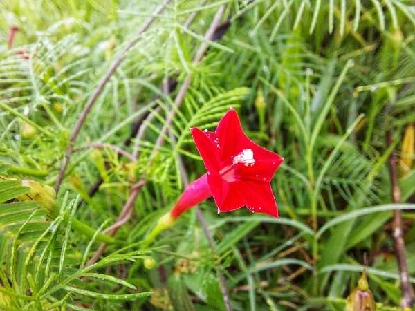

Ipomoea quamoclit
Common Names: Cypress Vine, Star Glory, Hummingbird Vine, Cardinal Creeper
Local Name: Mayil Manikkam (Tamil), Kamal Lata (Hindi)
Family: Convolvulaceae
Origin: Tropical Americas; naturalized throughout tropics
Plant Type: Annual or short-lived perennial climbing vine
Average Lifespan: Annual; self-seeds freely
| Growth Habit | Fast-growing twining vine; 2–5 meters |
| Plant Size | 2–5 meters tall |
| Leaves | Finely pinnate, feathery, bright green; resembles cypress foliage |
| Flowers | Tubular, star-shaped, 2–3 cm; scarlet red (also white and pink varieties) |
| Flower Characteristics | Opens in morning; attracts hummingbirds and sunbirds |
| Root System | Shallow fibrous roots |
| Climate | Tropical to subtropical; warm and humid |
| Temperature Range | 20–35°C; frost-sensitive |
| Soil Type | Well-drained, moderately fertile soil |
| Soil pH Preference | 6.0–7.0 |
| Sun Requirement | Full sun |
| Water Requirement | Moderate; avoid waterlogging |
| Can it Grow in Pots? | Yes, in medium pots with trellis support |
| Fertilizer Schedule | Light feeding monthly; excess nitrogen reduces flowering |
| Common Pests | Aphids, spider mites |
| Common Diseases | Leaf spot, powdery mildew |
| Flowering Months | Year-round in tropics; peak in warm months |
| Pollination Type | Bird and insect pollinated |
| Propagation by Seeds | Direct sow; germinates in 5–10 days; self-seeds prolifically |
| Biodiversity Benefits | Attracts sunbirds, hummingbirds, and butterflies |
Add your field observations here.